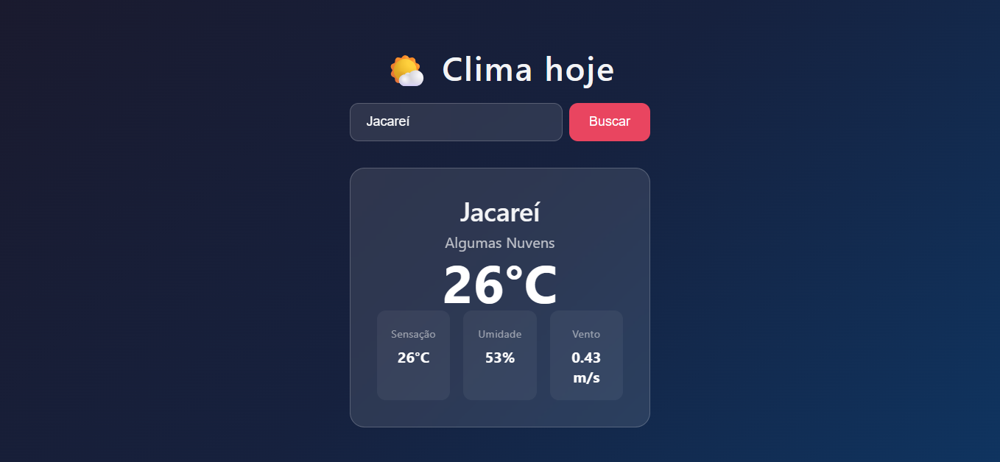
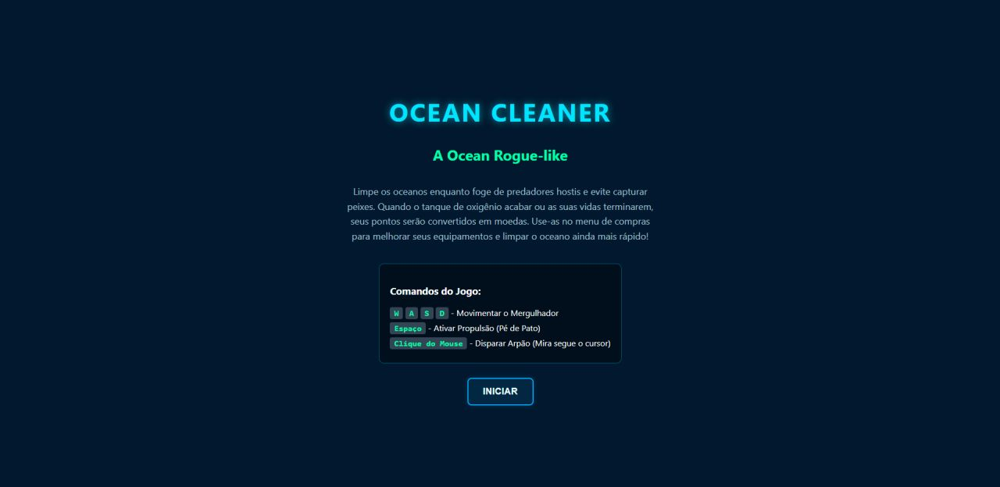
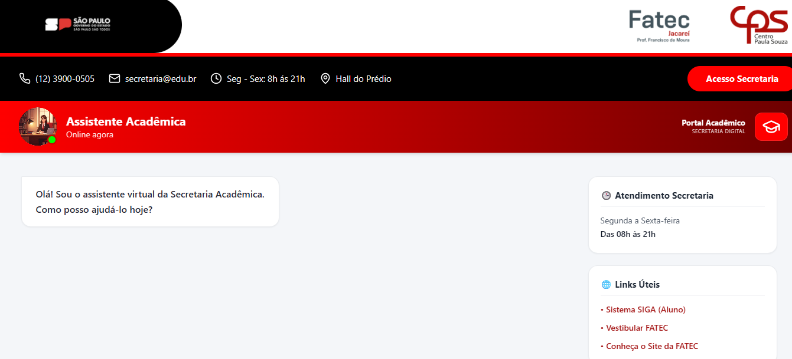
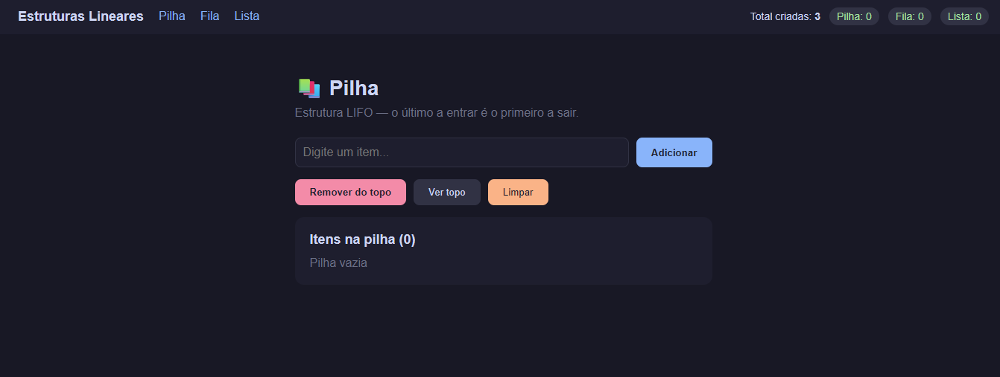
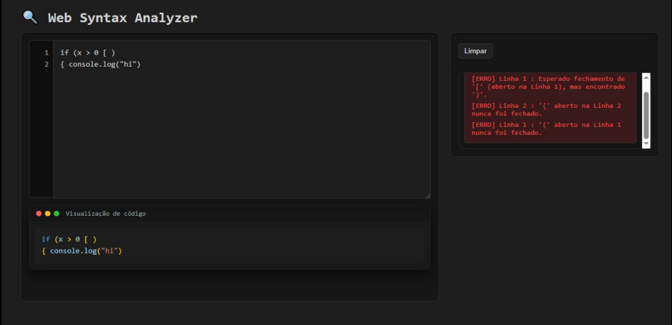

Desenvolvimento
- React
- Node.js
- Vite
- Express
Desenvolvedor de Software
Transformando ideias em sistemas completos, modernos e funcionais.
Estudante de Desenvolvimento de Software Multiplataforma na Fatec, atuando na construção de aplicações full stack com foco em performance, usabilidade e boas práticas de desenvolvimento. Busco criar soluções modernas que integrem experiência do usuário, arquitetura eficiente e tecnologia.

App de previsão do tempo com busca por cidade, temperatura, umidade e velocidade do vento.
Desenvolvimento do aplicativo e de suas funcionalidades.

Jogo arcade 2D em que um mergulhador explora o oceano para coletar lixo marinho, evitar criaturas perigosas e comprar melhorias tecnológicas.
Colaboração na criação das imagens, no desenvolvimento de ideias e na implementação do código do jogo.

Aplicação web de autoatendimento da Secretaria Acadêmica da Fatec Jacareí, com chatbot, autenticação JWT e documentos oficiais.
Atuação como desenvolvedor full stack, implementando funcionalidades no frontend e no backend.

Aplicação web que consome uma API REST de estruturas lineares (Pilha, Fila e Lista) com conceitos de POO.
Responsável pelo desenvolvimento completo da aplicação, incluindo frontend, integração com a API e lógica do projeto.

Editor web de código-fonte para uma linguagem fictícia, com análise léxica e sintática implementadas do zero, realce de sintaxe e localização precisa de erros.
Responsável pelo desenvolvimento do backend do projeto, realizado em trio.
Fatec Jacareí
Transferência para universidade pública com foco em desenvolvimento web, mobile e boas práticas de engenharia de software.
Anhembi Morumbi
Início da jornada na área de tecnologia, onde descobri a paixão pelo desenvolvimento de software.
Estilo Branco e Preto
Atendimento ao cliente, negociação e relacionamento comercial. Habilidades que complementam minha visão de produto e experiência do usuário.
Hotelaria
Recreação em hotéis, desenvolvendo comunicação, trabalho em equipe e adaptabilidade em ambientes dinâmicos.
Etec Cônego José Bento
Formação técnica com foco em organização, processos e gestão, base para o pensamento estruturado no desenvolvimento.
Estou sempre aberto a novas oportunidades e projetos. Não hesite em entrar em contato!